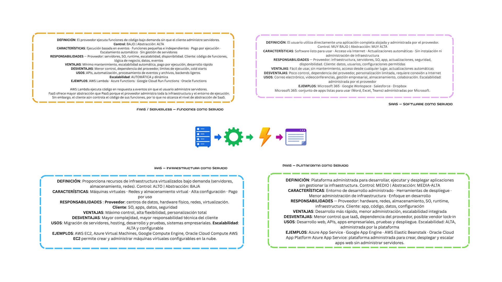

Materia:
Integración de Aplicaciones Computacionales
Profesor:
Dr. Raúl Morales Salcedo
Alumna y Matrícula:
Ana Paola Loredo Moreno – 613772
Doy mi palabra de que he realizado esta actividad con integridad académica.
San Pedro Garza García, N.L, México a 17 de agosto del 2026
Crear un mapa conceptual comparativo. Para cada modelo de servicio (IaaS, PaaS, SaaS y FaaS), se identifican las características clave y se representan visualmente en el mapa conceptual. Esto incluye aspectos como la definición, ejemplos de proveedores y casos de uso típicos.

En esta tarea, se logró crear un mapa conceptual que compara los modelos de servicio en la nube (IaaS, PaaS, SaaS y FaaS). Se identificaron las características clave de cada modelo, incluyendo definiciones, ejemplos de proveedores y casos de uso típicos. Este ejercicio permitió comprender mejor las diferencias y similitudes entre los modelos de servicio en la nube, facilitando la toma de decisiones informadas sobre cuál modelo es más adecuado para diferentes necesidades empresariales.